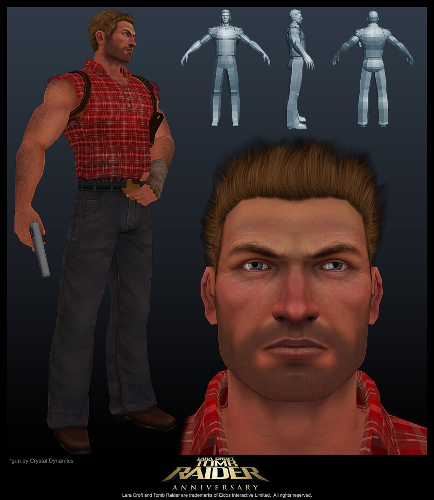
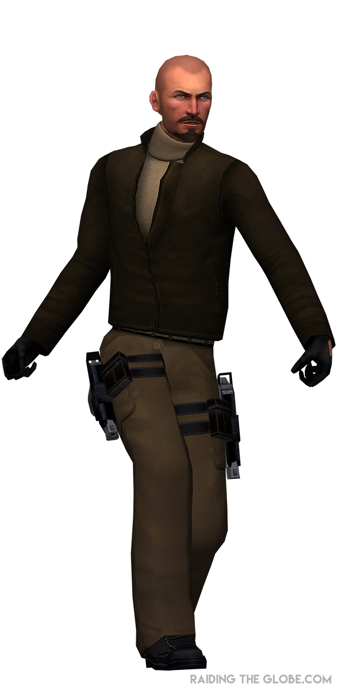

Tomb Raider 1: Characters
Lara Croft

Lara Croft is the main protagonist of the Tomb Raider series. She is a British archaeologist and adventurer, known for her intelligence, athleticism, and resourcefulness. In the first game, she embarks on a quest to find the mythical Scion artifact, facing dangerous traps, mythical creatures, and powerful enemies. Lara quickly realizes there's more at stake than she imagined as the mystery unfolds.
Jacqueline Natla

Jacqueline Natla is a mysterious businesswoman and the head of Natla Technologies. She is later revealed to be one of the three ancient Atlantean rulers, banished for betraying her kind. As the main antagonist, her goal is to reclaim the Scion and harness its power for domination and control.
Larson Conway
Larson Conway is an American mercenary hired by Natla to stop Lara from retrieving the Scion. He confronts Lara multiple times throughout the game. While tough and persistent, he often underestimates Lara’s skills and resourcefulness.
Pierre Dupont
Pierre Dupont is a cunning French treasure hunter and one of Lara’s rivals. Also working for Natla, he seeks the Scion for his own gain. Pierre appears during the Greece levels, where he attempts to stay one step ahead of Lara in the race for the artifact.